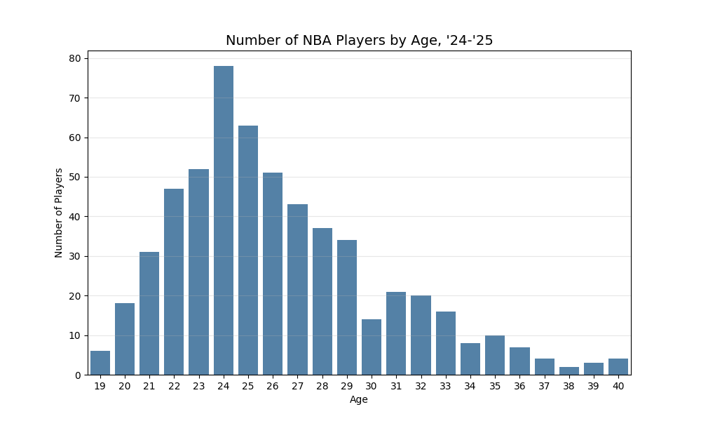

As part of our Bayesian Statistics book club, I wanted to demonstrate a use case of Bayesian techniques while familiarizing myself with some of the hierarchical modeling tools in python (read: PyMC). Since I had some experience with sabermetrics and R and wanted to do something slightly different, I settled on the following question.
How can one model NBA players’ career trajectories?
This question has much relevance for players, coaches, general managers, fans, and others. I’ll mostly follow the lead of Jim Albert’s excellent blog post on an analogous question for MLB players. Although there are many ways NBA players contribute to their teams’ success, we’ll narrow our scope and only use three pieces of information: who the player is, their age, and how many points they scored each season. First let’s grab the data and pare it down to the career stats of players who played last season and who have played at least three seasons.
Code
import numpy as npimport pandas as pdimport nba_apifrom nba_api.stats.endpoints import leaguedashplayerstatsimport matplotlib.pyplot as pltimport numpy as npimport plotly.express as pximport plotly.graph_objects as gofrom time import sleepfrom sklearn.preprocessing import PolynomialFeaturesfrom sklearn.linear_model import LinearRegressionimport arviz as azimport seaborn as snsimport pymc as pmimport pytensor.tensor as ptpd.set_option('display.max_columns', None)pd.options.display.float_format ="{:,.2f}".format
Code
# Last 25 NBA seasonsstart_year =2000end_year =2025seasons = [f"{y}-{str(y+1)[-2:]}"for y inrange(start_year, end_year)]
Code
all_seasons_data = []for season in seasons:print(f"Fetching {season}...") stats = leaguedashplayerstats.LeagueDashPlayerStats( season=season, season_type_all_star="Regular Season", per_mode_detailed="Totals" ).get_data_frames()[0]# Keep only what we need stats = stats[["PLAYER_ID", "PLAYER_NAME", "PTS", "AGE"]].copy() stats["AGE"] = stats['AGE'].astype(int) stats["SEASON_ID"] = season all_seasons_data.append(stats) sleep(0.6) # VERY important to avoid rate limits
season_counts = ( df.groupby("PLAYER_ID")["SEASON_ID"] .nunique() .reset_index(name="SEASONS_PLAYED"))current_players = stats["PLAYER_ID"] # players who played in '24-'25; "stats" is last year's dataeligible_players = season_counts[ season_counts["SEASONS_PLAYED"] >=3]["PLAYER_ID"]filtered_df = df[df["PLAYER_ID"].isin(eligible_players) & df["PLAYER_ID"].isin(current_players)]
Two Wrong Approaches
Ignoring who the players are, only using age & points
Let’s look at the average number of points scored by players during last season based on their age. The plot at the top of the page is fit with a LOESS model, and for simplicity, we can also fit a quadratic model:
Without much context, these might be surprising. The LOESS model shows that players continue to score more points on average as they age, and the quadratic model shows a decline, but it shows players continuing to score at a respectable rate, even in their late 30s. This is contrary to what we might expect from older players being less athletic. Why don’t teams fill their rosters with older players who are great at scoring? The issue with that logic is that there’s a survivorship bias. The following table, bar chart, and explanation break it down for us.
Age
Average Points
Number of Players
19
289.17
6
20
422.89
18
21
457.23
31
22
399.34
47
23
464.40
52
24
361.42
78
25
443.67
63
26
449.12
51
27
614.93
43
28
578.59
37
29
563.47
34
30
979.93
14
31
486.95
21
32
579.00
20
33
557.81
16
34
577.50
8
35
797.00
10
36
523.14
7
37
839.00
4
38
90.00
2
39
243.00
3
40
637.25
4

We can see there are a lot 20-something year-olds in the league, which is in tune with what we might’ve originally expected. The older ages have high scoring averages because the only players who are that age and are still in the league are stars who are past their peaks but are still good enough to contribute to their teams. Or to paraphrase what I told my sabermetrics class, “if we only looked at players with over 20 years of playing time, the results are pretty skewed since we’re only looking at LeBron James, who isn’t representitve of players.” Here are all the players who were 40 years old last season.
PLAYER_NAME
PTS
AGE
Chris Paul
723
40
LeBron James
1710
40
P.J. Tucker
9
40
Taj Gibson
107
40
Surely, if we looked at all 40-year-olds who have played in the NBA and forced them back into the league, the average scoring for 40-year-olds would be much smaller.
Individual models
So how can we try to account for this and model career trajectories? The other end of the spectrum would be to ignore similarities across players and to fit individual models for each player. A quadratic model might seem like a good first approximation, and it looks as follows:
However, even with a lightweight model, this would be overfitting. For example, here are quadratic fits to all players who received an MVP vote in the ’24-’25 season.
Code
def fit_player_quadratic(player_df): X = player_df[["AGE"]].values y = player_df["PTS"].values poly = PolynomialFeatures(degree=2, include_bias=False) X_poly = poly.fit_transform(X) model = LinearRegression() model.fit(X_poly, y)return pd.Series({"beta_0": model.intercept_,"beta_age": model.coef_[0],"beta_age2": model.coef_[1],"n_obs": len(player_df),"age_min": player_df["AGE"].min(),"age_max": player_df["AGE"].max() })
Though some of the quadratic curves fit the data well, some of them predict unrealistic trajectories. In particular, the parabolas for Shai Gilgeous-Alexander, Cade Cunningham, and Evan Mobley all open upwards, which doesn’t make sense since in reality, they’ll eventually start to decline. Our choice in a quadratic model can partially be blamed, but so can our choice of fitting a unique model for each individual. By fitting individual models, we’re missing out on relationships between the parameters of different players. Bayesian statistics can help us resolve this.
Multilevel model
Instead of fitting individual models, we can use a multilevel model. These types of models are good for data that can be grouped at multiple levels. In this case, each datapoint consists of a player, his age, and how many points he scored. Our first type of model ignored the relationships at the player level, though this is important; players perform at different levels, with different peaks and improvement/decline rates. The second type of model we fit ignored relationships across the players at different ages, and this information is useful because biology and experience lead to players having similarly shaped trajectories.
The Bayesian philosophy is as follows. We can again use the framework of the quadratic model
However, this time, we assume that the coefficients \(\beta_{0,i}\) come from a distribution, as do the \(\beta_{1,i}\) and \(\beta_{2,i}\). These assumptions impose a regularization on the coefficients and ensure that they don’t solely consider the individual player, but rather also overall scoring vs. age trends. The assumptions look like
We initialize the prior distributions and values of \(\mu\)s and \(\sigma\)s and then the model uses Bayes’ theorem to take the priors and data to compute the posterior distributions. Here’s the code to do this. Full disclosure: I got this code from ChatGPT. My first attempt had too many divergences and it suggested using the LKJ prior and a non-centered parametrization, and when I used the updated code it gave, it worked. Here’s how it explains each part. The short explanation is that the means \(\mu_0, \mu_1\), and \(\mu_2\) are population-level mean coefficients. We can use domain knowledge and intuition to initialize them in a way that makes sense, but ChatGPT just set them as 0 and I ran with it to try to get things to run. The values of \(\sigma\) are initialized as \(10, 5\), and \(5\), and I think we could probably loosen these (make \(\sigma\)s larger) if we’re worried about underfitting and tighten them (reduce initialized \(\sigma\)s) if we think we may be overfitting.
We immediately see that all the trajectories are now downward opening, which matches what we’d expect from what we know about athletes’ careers. I think this might be overfitting a little bit because many of the players’ curves decline rather steeply. This analysis included all players who played in the ’24-’25 season, and we’re comparing so it includes hundreds of players who won’t have as long of careers or high of peaks as the MVP candidates we’re looking at here. One way we can assuage this overfitting is by relaxing our priors, increasing the hyperparameters for the \(\sigma\).
Comparing the three models
One way we can compare the three models shown above is by seeing how well they predict future values. Instead of waiting for the current season (‘25-’26) to end, we can fit the model on the players’ data up to but not including ’24-’25, then see how well the model does in predicting the ’24-’25 scoring totals. We’ll look at both the mean squared error and the mean absolute error as our metrics to compare the performance.
I’ll show the results first and then the code for it after.
Results
MSE
MAE
Age-only
434,242.99
475.02
Per-player
551,429.81
568.89
Hierarchical
116,174.63
267.22
We see that under both metrics, the hierarchical model vastly outperforms the other two. The way to interpret the errors is that on average, our hierarchical model prediction for the ’24-’25 season is about 267 points away from the true value and the squared error is 116 thousand squared points.
Prepping the data
Code
df2 = filtered_df.copy()# Extract ending year (e.g. "2024-25" → 202522df["season_end"]=22df["SEASON_ID"].str.split("-").str[1].astype(int)
# Unique players in training setplayer_ids = train_df["PLAYER_ID"].unique()n_players =len(player_ids)player_id_to_idx = { pid: i for i, pid inenumerate(player_ids)}train_df["player_idx"] = train_df["PLAYER_ID"].map(player_id_to_idx)
We could allow for a more flexible model than simply a quadratic one. FiveThirtyEight’s CARMELO system uses local regression and likely outperforms what we’ve done here.
We can further evaluate performance by looking at plots of the residuals, especially looking at residuals vs. age to see if there are major issues.
We can fine-tune the initialized hyperparameters using cross-validation.
This data included only players who played last season, and we can broaden the analysis to include players who have already retired. Presumably, some players will retire this season, so I don’t think our approach will bias things in one direction or another too much.
More advanced models could be built off of these ideas and incorporate additional features such as height, weight, position, usage rate, etc.
From what I gathered from McElreath’s book, the \(\mu\)s and the \(\sigma\)s would themselves come from distributions, and we’d select hyperparameters for those. I don’t fully see where that’s happening in the code, or if it’s happening at all. Is that just something that’s part of the theory but not explicit in practice due to the math working out really nicely with conjugate priors? If you have additional insight, please reach out!